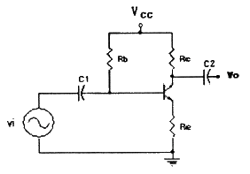
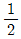
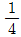
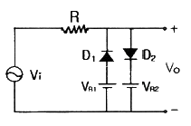
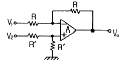
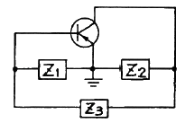
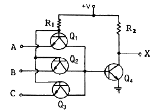
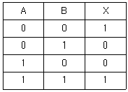
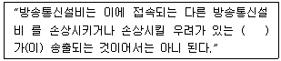

정보통신산업기사 (2011-06-12 기출문제)
1과목: 디지털전자회로
1. 다음 중 FET에 관한 설명으로 틀린 것은?
- 일반적으로 FET는 잡음에 대한 방지회로에 많이 사용된다.
- 유니폴라(unipolar) 소자이다.
- 바이폴라(bipolar) 소자이다.
- JFET는 게이트 접합에 순방향으로 바이어스를 걸어준다.
(정답률: 56%)

2. 쌍안정 멀티바이브레이터의 결합저항에 병렬로 부가한 콘덴서의 주사용 목적은?
- 증폭도를 높인다.
- 스위칭 속도를 높인다.
- 베이스 전위를 일정하게 유지시킨다.
- 이미터 전위를 일정하게 유지시킨다.
(정답률: 80%)
3. 신호파의 최고 주파수가 15[kHz]이다. PCM 검파에서 원래의 신호파로 복원하기 위한 표본화 펄스의 최소 주파수[kHz]는?
- 45
- 30
- 20
- 15
(정답률: 87%)
4. 다음 증폭 회로에서 입력신호와 출력신호 간의 위상차는?

- 0°
- 90°
- 180°
- 270°
(정답률: 82%)
5. 다음 중 진폭변조에서 변조도를 m 이라 할 때, 상측파대의 반송파와의 전력비는?
- m
- m2

m2
m2
(정답률: 61%)
6. J-K 플립플롭에서 2개의 입력이 똑같이 1이고 클록펄스가 계속 들어오면 출력은 어떤 상태가 되는가?
- Set
- Reset
- Toggling
- 동작불능
(정답률: 88%)
7. 다음 중 비정현파 발진기가 아닌 것은?
- 멀티바이브레이터 발진기
- 피어스 BE 발진기
- 블로킹 발진기
- 톱니파 발진기
(정답률: 65%)
8. 다음 h 파라미터 중 단위가 없는 것으로만 짝지어진 것은?
- hi, hr
- hr, hf
- hr, ho
- hf, ho
(정답률: 61%)
9. RC 회로에 스텝전압 입력시 발생 파형의 상승시간(rise time) tr과 관계없는 것은? (단, fH : 상측 3[dB] 주파수, B : 대역폭, τ : 시정수)
- tr = 2.2RC
- tr = 0.35 / fH
- tr = 1 / B
- tr = 1.1τ
(정답률: 63%)
10. 다음 그림의 회로 용도로 적합한 것은? (단, 다이오드는 이상적이고, VR1＜VR2이다.)

- 클리퍼
- 전압배율기
- 정류기
- 피크검출기
(정답률: 75%)
11. 다음 중 PLL(phase-locked loop)의 구성과 관계없는 것은?
- 위상검출기
- 저역통과필터
- 고역통과필터
- 피크검출기
(정답률: 60%)
12. 다음 연산증폭기에서 입출력 전압의 관계식은?

- Vo = V2- V1
- Vo = V1+ V2
- Vo = R(V1- V2)
- Vo = (V2+V1) / R
(정답률: 58%)
13. 푸시풀 트랜지스터 전력 증폭기에서 바이어스를 완전 B급으로 하지 않는 이유는?
- 효율을 높이기 위해
- 출력을 크게 하기 위해
- 안정된 동작을 위해
- Crossover 왜곡을 줄이기 위해
(정답률: 73%)
14. 증폭기의 전압이득이 1000±100일 때, 이 전압이득의 변화를 0.1[%]로 하기 위하여 부궤환 회로를 구성하려면 궤환율 β는?
- 0.9
- 0.19
- 0.099
- 1.1
(정답률: 67%)
15. 다음 중 C급 증폭기의 일반적인 특징이 아닌 것은?
- 효율이 높다.
- 출력단에 공진회로가 필요하다.
- 직선성이 좋다.
- 고출력용으로 많이 사용된다.
(정답률: 41%)
16. 그림의 발진회로에서 Z3에 수정 발진자를 연결하였을 때 회로의 발진조건은?

- Z1, Z2 : 유도성
- Z1, Z2 : 용량성
- Z1 : 유도성, Z2 : 용량성
- Z1 : 용량성, Z2 : 유도성
(정답률: 47%)
17. 그림의 회로가 정논리일 때, 이는 어떤 게이트인가?

- AND
- OR
- NAND
- NOR
(정답률: 73%)
18. 다음 중 TTL 게이트에서 스위칭 속도를 높이기 위해 사용되는 다이오드는?
- 바랙터 다이오드
- 제너 다이오드
- 쇼트키 다이오드
- 정류 다이오드
(정답률: 73%)
19. 슈미트 트리거(Schmitt trigger) 회로의 용도 설명 중 틀린 것은?
- 구형파 펄스 발생회로로 사용된다.
- 임의의 파형에서 그 크기에 해당하는 펄스폭의 구형파를 얻기 위해서 사용된다.
- A-D 변환회로로 사용된다.
- D-A 변환회로로 사용된다.
(정답률: 56%)
20. 다음 중 RC 필터 회로에서 리플 함유율을 작게 하려면?
- R을 작게 한다.
- C를 작게 한다.
- R, C를 모두 작게 한다.
- R과 C를 크게 한다.
(정답률: 66%)
2과목: 정보통신기기
21. 다음 중 통신위성의 주전력 공급원은?
- Dry Battery
- Fuel cells
- Solar cells
- Thermoelectric generator
(정답률: 81%)
22. 다음 중 EIA에서 정의한 25핀 RS-232C의 핀 번호와 기능이 틀린 것은?
- Pin 1(FG) : 보호용 접지
- Pin 2(TXD) : 데이터의 송신
- Pin 3(RXD) : 데이터의 수신
- Pin 5(RTS) : 출력 송신요구
(정답률: 74%)
23. 교환기의 트래픽 단위에서 144[HCS]는 몇 어랑[Erl]인가?
- 3
- 4
- 6
- 38
(정답률: 50%)
24. 다음 중 무선통신에서 통신의 품질을 평가하는 주요 척도는?
- 신호대변조전력비
- 송신전력
- 신호대잡음비
- 전송 주파수
(정답률: 86%)
25. 다음 중 전화 교환기의 기능이 아닌 것은?
- 중계경로 중에서 1회선을 선택하여 접속하는 스위칭 기능
- 단축 다이얼, 부재중 전화, 착신전송 등의 각종 전화 교환 서비스 기능
- 신호 파형의 변환, 신호 전송속도의 변환, 제어신호의 삽입 기능
- 다이얼 정보에 따라 발신국에서 착신국에 이르는 중계 경로를 선택하는 기능
(정답률: 62%)
26. 다음 중 광가입자망의 가입자별로 하나의 파장을 대응시켜 고속전송이 가능한 방식은?
- FDM 방식
- TDM 방식
- SDM 방식
- WDM 방식
(정답률: 82%)
27. TV 채널대역 내에서 영상신호와 음성신호 대역으로 사용되지 않는 부분을 이용하는 방식은?
- 텔레텍스트
- 비디오텍스
- 텔렉스
- 텔레텍스
(정답률: 74%)
28. DTE와 DCE 간의 인터페이스 중 기계적 특성을 설명한 것은?
- DTE와 DCE 간의 물리적 연결에 관한 규정
- DTE와 DCE를 연결하는 각 단자의 전기적 기능을 규정
- 신호의 전압레벨과 전압변동의 타이밍과 관련된 규정
- 기능적 특성을 기준으로 데이터를 전송하기 위해 단자 간에 주고받는 신호의 순서 규정
(정답률: 65%)
29. 다음 중 전자교환기 방식과 거리가 먼 것은?
- 통화로계 및 제어계가 있다.
- 다양한 특수 서비스를 제공할 수 있다.
- 축적 프로그램 제어 기술을 사용한다.
- X-bar 교환기가 대표적이다.
(정답률: 71%)
30. 다음 중 컴퓨터 시스템에서 처리 결과를 음성으로 출력하는 것은?
- 음성인식기
- 음성합성기
- 음성입력기
- 음성분석기
(정답률: 55%)
31. 다음 중 HDTV 화면의 가로:세로의 비는?
- 4:3
- 3:4
- 16:9
- 9:16
(정답률: 80%)
32. 위성통신의 다원접속 방식이 아닌 것은?
- FDMA(Frequency Division Multiple Access)
- TDMA(Time Division Multiple Access)
- CDMA(Code Division Multiple Access)
- PAMA(Pre-Alignment Multiple Access)
(정답률: 80%)
33. 다음 CATV의 구성 중 전송계의 구성요소가 아닌 것은?
- 분배선
- 간선증폭기
- 연장증폭기
- 헤드엔드
(정답률: 79%)
34. 다음 중 전(全)전자 교환기의 통화로계 구성이 아닌 것은?
- 통화로망
- 중계선 정합부
- 가입자선 정합부
- 주변제어장치
(정답률: 69%)
35. 광섬유를 전송매체로 100[Mbps]의 전송속도를 제공하는 두 개의 링 구조로 이루어진 것은?
- ADSL
- HDSL
- VDSL
- FDDI
(정답률: 80%)
36. MHS(Message Handling System)의 구성 요소로 텔레텍스, 팩시밀리 등의 텔레매틱스 User가 이용하도록 하는 기능을 제공하는 것은?
- UA(User Agent)
- MTA(Message Transfer Agent)
- MS(Message Store)
- AU(Access Unit)
(정답률: 40%)
37. 다음 중 주파수 스펙트럼의 이용효율이 가장 좋은 변조 방식은?
- 16QAM
- FSK
- ASK
- 4PSK
(정답률: 83%)
38. FM 수신기에서 반송파가 없을 때, 저주파 증폭기의 동작을 멈추게 하는 기능을 갖는 것은?
- 주파수 변별기
- 디엠퍼시스 회로
- 자동 주파수 제어부
- 스켈치 회로
(정답률: 42%)
39. 비디오텍스의 기술방식에서 점, 선, 호, 다각형과 같은 기하학적 요소의 조합에 의해 표현하는 방식은?
- 알파 포토그래픽 방식
- 알파 모자이크 방식
- 알파 혼합 방식
- 알파 지오메트릭 방식
(정답률: 82%)
40. 다음 중 컴퓨터를 이용하여 마이크로필름에 들어있는 정보를 검색하기 위한 장치는?
- OMR
- OCR
- COM
- CAR
(정답률: 41%)
3과목: 정보전송개론
41. N진 위상 변조를 하는 동기식 모뎀의 변조속도가 B[baud]일 경우, 데이터의 전송속도[bps]는?
- N log10 B
- N log2 B
- B log10 N
- B log2 N
(정답률: 69%)
42. 대역폭이 100[kHz]이고 S/N비가 15일 때, 채널용량[Kbps]은?
- 200
- 400
- 600
- 800
(정답률: 71%)
43. 다음 중 비트방식 프로토콜을 지원하지 않는 것은?
- BSC
- HDLC
- SDLC
- ADCCP
(정답률: 70%)
44. 다음 중 ARQ의 종류가 아닌 것은?
- Stop and Wait ARQ
- Selective Repeat ARQ
- Discrete ARQ
- Adaptive ARQ
(정답률: 82%)
45. 다음 중 PLL(Phase Locked Loop)의 구성이 아닌 것은?
- 위상 검출기
- 저역통과 필터
- 계수기
- 전압제어 발진기
(정답률: 53%)
46. 다음 중 전송제어 문자의 설명이 틀린 것은?
- STX : 텍스트의 시작을 표시한다.
- ETB : 전송블록의 종료를 표시한다.
- ENQ : 질의가 끝났음을 알린다.
- SOH : 헤딩의 시작을 표시한다.
(정답률: 56%)
47. 다음 중 TCP/IP 서비스에서 프로토콜과 용도가 상호 틀린 것은?
- FTP - 파일전송 프로그램
- RCP - 가상 터미널
- SMTP - 전자우편
- TELNET - 원격 시스템으로의 접속
(정답률: 67%)
48. PCM 통신에서 양자화 방법으로 적합하지 않은 것은?
- 선형 양자화
- 적응형 양자화
- 분포형 양자화
- 비선형 양자화
(정답률: 41%)
49. 수신장치에서 송신된 데이터의 에러비트를 검출하고 정정할 수 있는 방식은?
- ARQ
- FEC
- Bit stuffing
- HDBn
(정답률: 45%)
50. 다음 중 UTP 케이블에서 주로 사용하는 커넥터는?
- RJ-45
- DB25
- BNC
- DB9
(정답률: 85%)
51. ITU-T 권고안 시리즈 중 ISDN에 관한 사항을 규정한 것은?
- I
- Q
- V
- X
(정답률: 58%)
52. 다음 중 HDLC 링크 구성 방식에 따른 동작 모드에 속하지 않는 것은?
- 선택 거절 모드
- 비동기 응답 모드
- 정류 응답 모드
- 비동기 균형 모드
(정답률: 51%)
53. 다음 중 이동통신 시스템의 구성요소가 아닌 것은?
- 무선교환국
- 무선기지국
- 트랜스폰터
- 무선전화단말장치
(정답률: 77%)
54. 다음 중 광섬유 케이블의 종류에 해당되지 않는 것은?
- single mode step index fiber
- single mode graded index fiber
- multi mode step index fiber
- multi mode graded index fiber
(정답률: 54%)
55. 다음 중 광섬유 케이블의 주요 구조 요소에 포함되지 않는 것은?
- 코어(Core)
- 클래딩(Cladding)
- 코팅(Coating)
- 금속박막
(정답률: 70%)
56. 다음 중 양자화 잡음을 경감시키는 방법이 아닌 것은?
- 선형 양자화를 한다.
- 압신기를 사용한다.
- 양자화 스텝수를 증가시킨다.
- 작은 진폭의 신호를 신장시킨다.
(정답률: 44%)
57. 측정한 신호의 전력이 0.1[W]일 때, 이를 [dBm]으로 표시하면?
- 0[dBm]
- 10[dBm]
- 20[dBm]
- 30[dBm]
(정답률: 57%)
58. 다음 중 대역확산방식을 이용하는 다원접속방식은?
- CDMA
- TDMA
- SDMA
- FDMA
(정답률: 71%)
59. 다음 중 상호 변조 왜곡의 방지대책으로 적합하지 않은 것은?
- 다중화 방식을 TDM에서 FDM으로 변경한다.
- 필터를 이용하여 통과대역 밖의 신호를 잘라낸다.
- 입력신호의 크기를 너무 크게 하지 않는다.
- 송수신장치를 선형영역에서 동작시킨다.
(정답률: 65%)
60. 다음 중 스펙트럼 효율이 우수하고 비동기 검파도 가능한 것은?
- PSK
- OQPSK
- MSK
- QAM
(정답률: 31%)
4과목: 전자계산기일반 및 정보설비기준
61. 다음 중 C 언어에 대한 설명으로 틀린 것은?
- 자체적으로 입출력 기능이 없다.
- 포인터를 이용해 주소를 계산해 낼 수 있다.
- 대소문자 구별이 없다.
- bit 연산을 할 수 있다.
(정답률: 77%)
62. 다음 진리표를 가지는 게이트 명칭은? (단, A, B는 입력, X는 출력이다.)

- NAND
- EX-OR
- XNOR
- NOR
(정답률: 63%)
63. 부동소수점의 구성요소 중 비트 할당이 필요없는 것은?
- 소수점
- 부호
- 소수부
- 지수부
(정답률: 56%)
64. 기억장치에 기억된 명령이 순서로 중앙처리장치에서 실행될 수 있도록 그 주소 번지를 지정해 주는 것은?
- Stack Point
- Instruction Counter
- Instruction Register
- Program Conter
(정답률: 58%)
65. 다음 중 하나의 프로그램이 처리되는 과정을 옳게 나열한 것은?
- 번역 → 적재 → 실행
- 번역 → 실행 → 적재
- 적재 → 실행 → 번역
- 적재 → 번역 → 실행
(정답률: 48%)
66. 다음 설명 중 틀린 것은?
- 마이크로프로세서는 연산장치, 제어장치, 레지스터 등으로 구성된다.
- 레지스터는 특정 데이터를 영구적으로 보관한다.
- 마이크로프로세서는 중앙처리장치를 하나의 칩에 집적한 것이다.
- 개인용 컴퓨터는 마이크로프로세서를 이용하여 제작할 수 있다.
(정답률: 71%)
67. 1바이트에 2개의 숫자를 8421 코드로 나타내며, 최하위 바이트의 존(Zone) 부분에 부호 표시가 있는 양수(+)일 때는 1100(C), 부호 표시가 없는 양수일 때는 1111(F), 음수(-)일 때는 1101(D)을 부호(Sign)로 표현하는 형식은?
- 팩 10진법 형식(Packed decimal format)
- 언팩 10진법 형식(Unpacked decimal format)
- 팩 16진법 형식(Packed hexadecimal format)
- 언팩 16진법 형식(Unpacked hexadecimal format)
(정답률: 54%)
68. 프로그램 카운터와 명령의 번지 부분을 더해서 유효번지를 결정하는 어드레싱 모드는?
- Immediate Addressing
- Index Addressing
- Direct Addressing
- Relative Addressing
(정답률: 35%)
69. 6개의 입력을 가지는 OR 게이트에서 입력 조합 중 몇 개가 HIGH 출력을 만드는가?
- 31
- 32
- 63
- 64
(정답률: 55%)
70. 운영체제가 수행하는 프로세스 관리 내용이 아닌 것은?
- 프로세스의 생성과 중지
- 프로세스간의 자원 공유 관리
- 각 프로세스들의 실행시간
- 프로세스의 할당영역 접근보호
(정답률: 42%)
71. 다음 중 전기통신기본계획에 포함되어야 하는 사항이 아닌 것은?
- 전기통신설비에 관한 사항
- 전기통신의 질서유지에 관한 사항
- 전기통신기술의 표준화에 관한 사항
- 전기통신기술의 진흥에 관한 사항
(정답률: 33%)
72. 다음 ( ) 안에 들어갈 내용으로 적합한 것은?

- 정보
- 전압 또는 전류
- 이상전력
- 전기신호
(정답률: 45%)
73. 사업자의 교환설비로부터 이용자 방송통신설비의 최초 단자에 이르기까지의 사이에 구성되는 회선을 말하는 것은?
- 국선
- 내선
- 전송설비
- 선로설비
(정답률: 70%)
74. 정보통신공사 발주자는 누구에게 공사의 설계를 발주하여야 하는가?
- 공사업자
- 감리원
- 용역업자
- 하도급업자
(정답률: 67%)
75. 전기통신에 관한 기본적인 사항을 정하여 전기통신을 효율적으로 관리하고 그 발전을 촉진함으로써 공공복리의 증진에 이바지함을 목적으로 하는 법은?
- 전기통신기본법
- 정보통신공사업법
- 정보통신이용촉진법
- 전기통신사업법
(정답률: 70%)
76. 공사업자가 품위의 유지, 기술의 향상, 공사시공 방법의 개량 기타 공사업의 건전한 발전을 위하여 방송통신위원회의 인가를 받아 설립할 수 있는 기구는?
- 정보통신공사협회
- 정보통신공제조합
- 한국정보통신산업협회
- 한국정보통신기술협회
(정답률: 59%)
77. 다음 중 정보통신공사업의 등록기준이 아닌 것은?
- 사무실
- 기술능력
- 자본금
- 공사실적
(정답률: 53%)
78. 기간통신사업자가 전기통신역무에 제공되는 선로를 설치하기 위하여 타인의 토지를 사용할 경우 필요한 조치로서 옳은 것은?
- 선로설비 등을 설치한 후 토지의 소유자와 협의를 한다.
- 미리 토지의 소유자 또는 점유자와 협의를 하여야 한다.
- 미리 토지의 소유자 또는 점유자에게 보상을 한다.
- 선로설비 등을 설치한 후 토지의 소유자에게 통지를 한다.
(정답률: 73%)
79. 부가통신사업을 경영하고자 하는 자는 대통령령이 정하는 요건 및 절차에 따라 어떻게 하여야 하는가?
- 방송통신위원회에 신고하여야 한다.
- 방송통신위원회에 등록하여야 한다.
- 방송통신위원회에 승인을 받아야 한다.
- 방송통신위원회에 허가를 받아야 한다.
(정답률: 59%)
80. 보편적 역무의 구체적 내용을 정할 시 고려사항에 속하지 않는 것은?
- 정보화 촉진
- 이용자의 이익과 안전
- 전기통신역무의 보급 정도
- 정보통신기술의 발전 정도
(정답률: 69%)
JFET는 게이트 접합에 역방향으로 바이어스를 걸어준다. - JFET는 게이트 접합에 역방향으로 바이어스를 걸어줘야 한다. 이유는 게이트와 소스 사이에 역방향 전압을 걸어주면 게이트-채널 간의 얇은 pn 접합 영역이 확장되어 채널의 전류가 감소하기 때문이다.